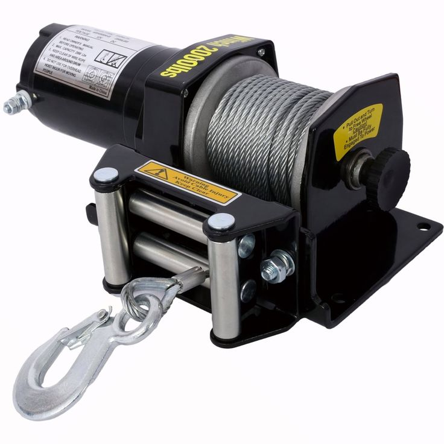
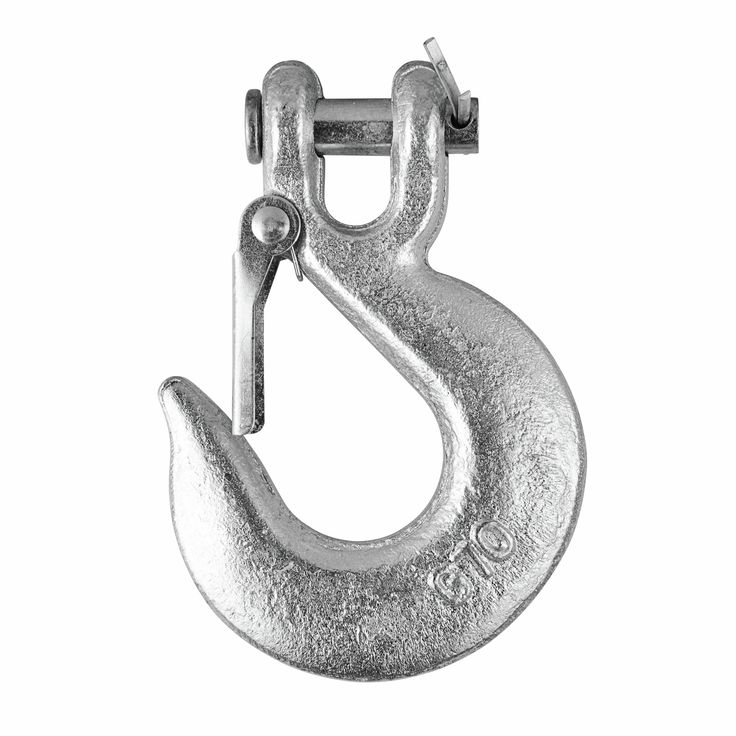
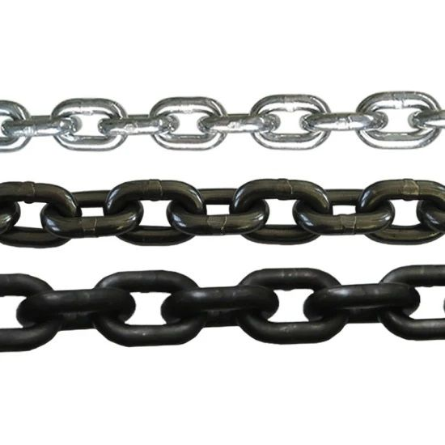

Our Products

Crawler Crane
A crawler crane is a heavy-duty lifting machine designed for maximum lifting capacity and long-term durability. It is widely used in mining and construction industries for handling large and heavy materials safely.

Heavy-Duty Mining Jacks
Heavy-duty mining jacks are powerful tools built to handle extreme loads in demanding mining environments. They provide reliable support, stability, and precision when lifting or positioning heavy machinery and equipment.

Hoist
A hoist is a mechanical device used to lift or lower heavy loads vertically using a chain or wire rope. It is commonly used in construction sites, warehouses, and mining operations for efficient material handling.

Winches
A winch is a mechanical device used to pull, lift, or move heavy loads by winding a cable or rope around a rotating drum. It can be powered manually, electrically, or hydraulically, making it suitable for mining and construction environments.

Heavy-Duty Hooks
Heavy-duty hooks are strong mechanical accessories used to securely attach loads during lifting and rigging operations. They are made from high-strength steel to ensure durability, safety, and reliable performance.

Heavy-Duty Lifting Slings
Heavy-duty lifting slings are designed to safely lift and move heavy equipment and materials. They are manufactured from durable materials to provide strength, flexibility, and safety in industrial and mining operations.

Heavy-Duty Chains
Heavy-duty chains are high-strength lifting accessories designed for pulling, securing, and lifting heavy loads in mining and industrial environments. They are built for durability, reliability, and safe performance under extreme working conditions.

Heavy-Duty Load Binders
Heavy-duty load binders are strong fastening tools used to tighten and secure chains during lifting and transportation operations. They provide maximum tension, stability, and safety when handling heavy industrial and mining equipment.